18.12.01 Icon-Extract 1.1Icons aus der Windowswelt übernehmenVon Thomas Kerkloh
Inhaltsverzeichnis:
Einleitung
Icon-Extract 1.1 vom 12.07.2001 von Florent Lafabrie (siehe Autor) verspricht eine Vereinfachung der Übernahme von Icons aus der Windowswelt. Der Weg bisher:
Icon-Extract verspricht den einfachen Weg:
Der folgende Artikel zeigt auf, wie es mit den Versprechungen aussieht. KomfortIcon-Extract kommt zeitgemäß daher: GEMSetup zum Installieren aller Komponenten in diversen Sprachen (zur Zeit stehen Englisch, Französisch und Spanisch zur Auswahl). HTML-Hilfetexte, ST-Guide-Unterstützung und BubbleGEM-Hilfetexte runden das Angebot ab. Funktionen können sowohl mit der Maus als auch per Tastatur aufgerufen werden; die Dialoge liegen in Fenstern und Buttons lassen sich per Tastaturshortcuts bedienen. Die Gestaltung z.B. des Konfigurationsdialoges ist sehr gewöhnungsbedürftig; der Autor hat ausgiebig Iconanleihen bei diversen Windowsapplikationen gemacht. Die Bedienung ist ebenso wie die Gestaltung der Dialoge gewöhnungsbedürftig; manche mögen das GUI einfach nur als grausig empfinden. Fakt ist aber, dass alle Funktionen klar erkennbar sind und auch dementsprechend funktionieren. Auch Benutzer ohne Englisch-, Spanisch- oder Französischkenntnisse werden das Programm bedienen können. Der Autor ist via E-Mail erreichbar ( Florent Lafabrie (lafabrie@club-internet.fr)) und es gibt eine Homepage, auf der gegebenenfalls neue Versionen und Zusatzinformationen bereitstehen. SystemvoraussetzungenDer Programmautor (Florent Lafabrie (siehe Autor) gibt folgende System-Vorgaben für sein Programm vor:
StatusIcon-Extract 1.1 ist Shareware, die Gebühr beträgt 50 FF (ca. 15 DM beziehungsweise 7,62 EUR). 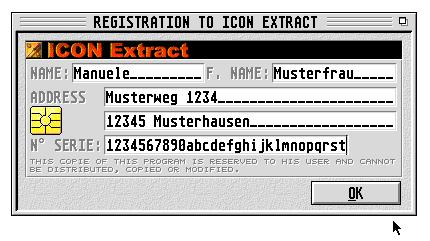 Auch ohne Registrierung funktioniert Icon-Extract ohne Einschränkungen, einer ausgiebigen Testaktion steht nichts im Wege. Einer anschließenden Registrierung aber auch nicht... Das Testsystem
InstallationPer GEMSetup 2.01 von Joachim Fornallaz gestaltet sich die Installation sehr einfach. Neben der französischen und spanischen Version kann auch eine englische installiert werden. Das Verzeichnis mit den Programmdateien kann auf einen beliebigen Datenträger installiert werden. 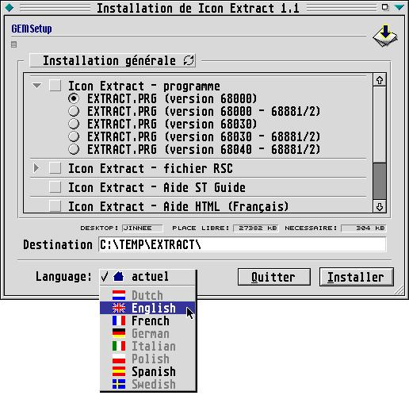 Welche Version von Icon-Extract man für seinen Rechner installieren sollte, steht im ST-Guide-Hilfetext. Diese kann man selber auspacken. Sie befindet sich im jeweiligen Sprachen-Ordner (z.B. french oder english) als LZH-Archiv. Die installierte ST-Guide-Hilfe bezieht sich zwar auf die Icon-Extract-Version 1.0, allerdings scheint es in der Version 1.1 nicht allzuviele Änderungen im Vergleich zur 1.0 gegeben zu haben. Der erste ProgrammstartNach dem Start von Icon-Extract erhält der unregistrierte Benutzer einen kurzen Moment Zeit, sich die Sache mit der Registration des Shareware-Programms doch nochmal zu überlegen. 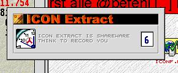 Anschließend präsentiert sich Icon-Extract im Desktop-Look. Fenster anderer Applikationen, die geöffnet sind, werden nicht überdeckt. Auch ein Wechsel zu diesen Applikationen ist zu diesem Zeitpunkt noch möglich. 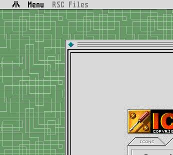 Der Hauptdialog: Bereich IconsÜber den Menüpunkt Menu und den Menüeintrag Open (oder per Tastaturkürzel Control-O) wird das Hauptfenster geöffnet und die ersten Einstellungen können vorgenommen werden. Der Hauptdialog ist als Reiter/Karteikarten-Dialog konzipiert, unterteilt ist dieser in die beiden Bereiche ICONS und CONFIG. 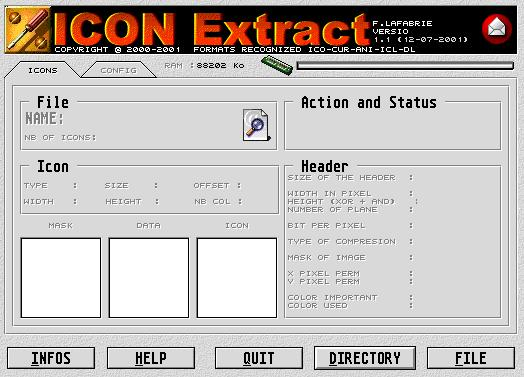 Der Bereich ICONS ist eher der Bereich, der interessant wird, wenn die Konvertierung vorgenommen wird. Zum Zeitpunkt der Konfiguration ist er noch leer. Der Hauptdialog: Bereich ConfigWichtiger und auch interessanter ist der Bereich CONFIG; hier lassen sich die diversen Voreinstellungen tätigen, die beim eigentlichen Konvertierungsvorgang das Endergebnis bestimmen. 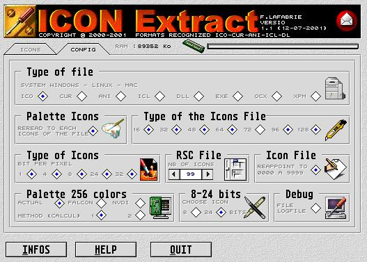 Eingestellt werden können:
Die KonvertierungJe nach eingestelltem Originalformat kann man im Hauptdialog Bereich ICONS nun eine Einzelne Datei (File) oder einen ganzen Ordnerinhalt (Directory) auswählen, die konvertiert/extrahiert werden sollen. 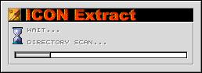 Das Format der gewählten Datei beziehungsweise der Inhalt des Ordners werden nun analysiert und das Ergebnis wird im Dialog dargestellt. 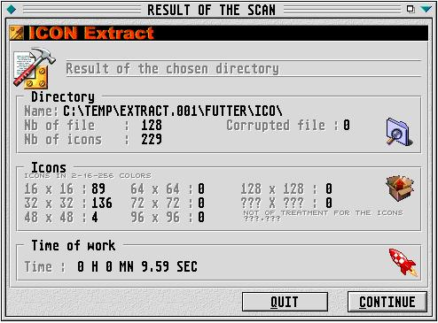 Klick auf den Button Continue startet die Konvertierung/Extraktion. Im nun im Vordergrund liegenden Dialog kann man die Aktionen und den Fortschritt der Konvertierung/Extraktion mitverfolgen. Leider lässt sich dieser Vorgang nicht abbrechen, andere Applikationen sind währenddessen auch nicht erreichbar. 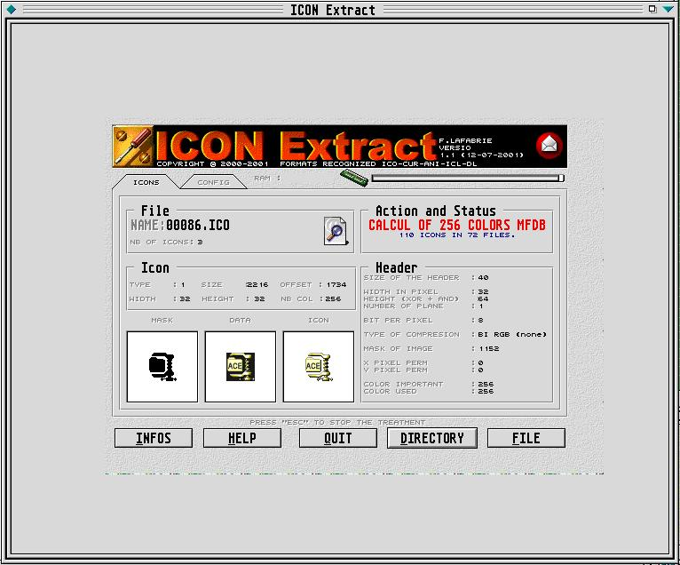 Nach erfolgter Konvertierung/Extraktion liegt im selben Verzeichnis wie die Icons auch eine RSC-Datei, die nun alle konvertierten/extrahierten Icons enthält. Der besseren Übersicht halber wird für jede Iconauflösung jeweils eine eigene RSC-Datei angelegt. Enthielten die Icondateien Icons im Format 48*48 und 16*16 und 32*32, so findet man nun 3 RSC-Dateien mit den Namen ICO48-01.RSC, ICO32-01.RSC und ICO16-01.RSC. Icon-Extract bietet nun direkt die Möglichkeit, sich diese im RSC anzusehen. 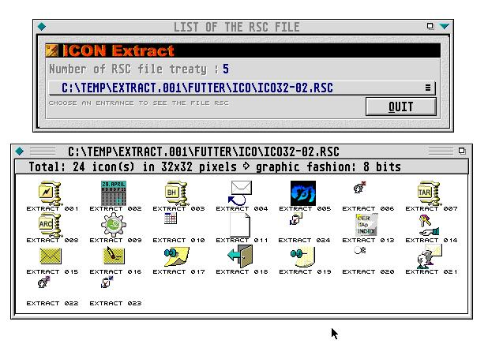 Alle RSCs, die während einer Sitzung mit Icon-Extract erstellt wurden, sind über diesen Dialog auswählbar. Er ist erreichbar über das Menu RSC-Files und dem Menüeintrag Display the list und/oder das Tastatur-Kürzel Control-V. 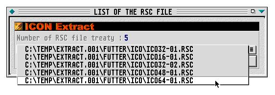 Einer weiteren Verarbeitung der so erstellten RSC steht mit geeignetem RCS wie z.B. Interface und ResourceMaster nichts mehr im Wege. Florent Lafabrie (siehe Der Autor) gibt im ST-Guide-Hilfetext auch diverse URLs an, die für Nachschub an Icons sorgen; ein Test mit einer Auswahl von Dateien einer Standard-Windows-Installation folgt hier im nächsten Kapitel. Der PraxistestDie mitgelieferten Icons, die sich im Ordner EXAMPLES befinden, werden von Icon-Extract ohne Probleme konvertiert/extrahiert. Um zu sehen, wie Icon-Extract mit Dateien aus dem Windowsbereich zurecht kommt, wurde auf einem Windows95-System alles an *.ICO,*.ANI und *.CUR zum Atari transferiert. Icon-Extract konnte alle Dateien in RSC konvertieren/extrahieren, Probleme gab es nur bei langen Dateinamen und Dateinamen, die Leerzeichen enthalten. Das Ergebnis einer Konvertierung/Extraktion sieht man hier: 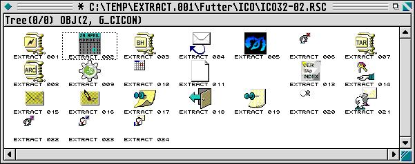 Im Bereich der DLL klappte leider nichts, es lagen wohl keine DLLs vor, mit denen Icon-Extract etwas anfangen konnte. Der Autor geht in seiner Programmdokumentation sehr genau auf die Arten der Dateien ein, die per Icon-Extract bearbeitet werden können. Ein Kurztest mit diversen ICL-, ICO-, CUR- und ANI-Dateien aus dem Internet (einige Adressen/Links sind auch in den Hilfetexten und auf der Homepage von Florent Lafabrie (siehe Der Autor) angegeben) verlief ebenfalls positiv. Programmfehler und sonstige UnschönheitenKein Programm ohne den einen oder anderen Bug - auch Icon-Extract macht da keine Ausnahme, zu kompletten Abstürzen kam es aber in der Testphase nicht! Der Autor beschreibt zwei Fehler, die ihm selbst zur Zeit bekannt sind. Nachvollziehen konnte der Artikelautor diese auf seinem Testsystem allerdings (siehe Das Testsystem) nicht:
Des Weiteren sind im Test folgende Punkte aufgefallen:
FazitIcon-Extract 1.1 kann man all denen empfehlen, die des öfteren Icons von der Windowswelt übernehmen wollen. Die Zeitersparnis ist doch immens, wenn man das im Vergleich zur manuellen Iconkonvertierung durch Grafikfiles sieht. Trotz der Minuspunkte (gewöhnungsbedürftiges GUI, keine langen Dateinamen, relativ langsam) wird dieses Programm seiner Aufgabe mehr als gerecht. Gravierende Mängel sind in der Testphase nicht aufgetreten, einige Bereiche wirken noch verbesserungswürdig (z.B. lange Dateinamen), aber insgesamt erscheint die Sharewaregebühr von ca. 15 DM bzw. 7,62 EURO absolut gerechtfertigt. BezugHomepage des Programmautors: http://www.club-internet.fr/perso/lafabrie/ Der AutorFlorent Lafabrie2 Rue René Byé 65000 TARBES (FRANCE)
E-Mail:
Florent Lafabrie (lafabrie@club-internet.fr) |
Copyright und alle Rechte beim ATOS-Magazin.
Nachdruck und Veröffentlichung von Inhalten nur mit schriftlicher
Zustimmung der Redaktion.
Impressum
-
Rückmeldung via Mail oder Formular
-
Nachricht an webmaster